Candidate List 20260503Previous Day Next Day
Section 1: New Sources (age<1d) Section 2: Old (1-5d) sources observed last nightplaceholder
Section 2: Older Sources Observed Last Night (4)
0. ZTF26aauiroa (Afterglow?FBOT?) [Back to Top] [Share] [Trigger Swift] [Fritz] [Lasair]RA, Dec: 246.10102, 20.53036 16h24m24.24s, 20d31m49.31sGalactic (l, b): 37.24404, 41.20038 ext(g-r) = 0.07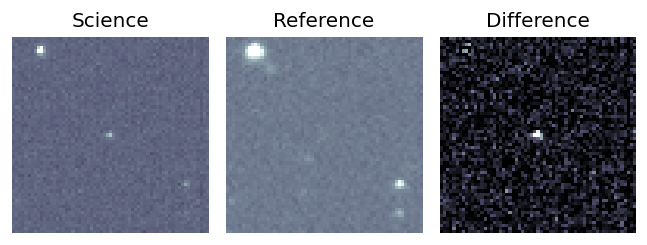
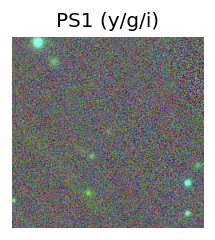
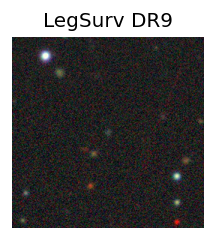
TESS: Sectors [ 25 51 52 78 79 117]
SDSS (10 arcsec):Found SDSS phot-z: z=0.67; peak abs mag = -25.33
PS1: 0 sources in 3 arcsec
LegacySurvey: 1 sources in 3 arcsec Closest: d = 0.18 arcsec, 207.2 deg (east of north) photoz=0.37 (68% bounds 0.26, 0.54), type=REX peak abs mag = -23.64 (68% bounds -22.7, -24.6)
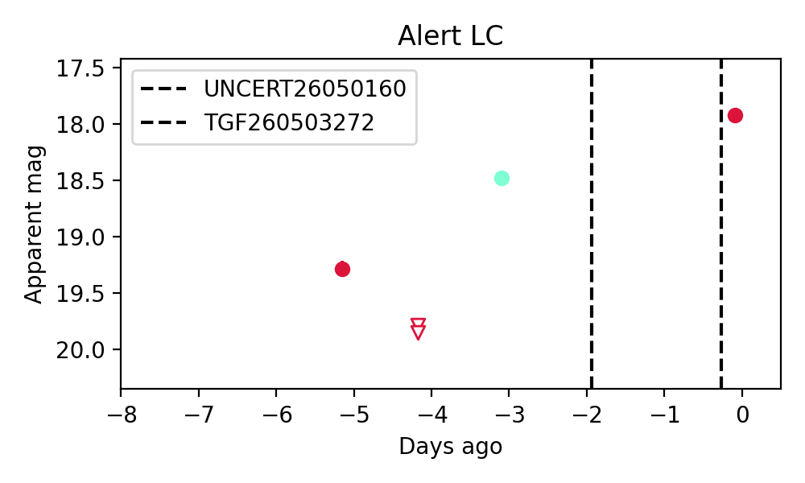
Rise Rate:
g: 0.47 mag/day
r: 0.47 mag/day
i: -99 mag/day
Fade Rate:
g: -99 mag/day
r: 0.58 mag/day
i: -99 mag/day
1. ZTF26aaujcay (FBOT?) [Back to Top] [Share] [Trigger Swift] [Fritz] [Lasair]RA, Dec: 253.67174, 22.66298 16h54m41.22s, 22d39m46.74sGalactic (l, b): 42.63285, 35.18413 ext(g-r) = 0.089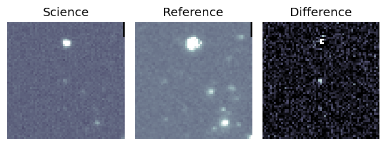
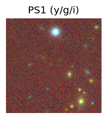
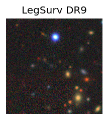
TESS: Sectors [ 25 52 79 117]
SDSS (10 arcsec):Found SDSS phot-z: z=0.31; peak abs mag = -22.09
PS1: 0 sources in 3 arcsec
LegacySurvey: 1 sources in 3 arcsec Closest: d = 1.85 arcsec, 83.7 deg (east of north) photoz=0.51 (68% bounds 0.18, 0.98), type=REX peak abs mag = -23.18 (68% bounds -20.58, -24.92)
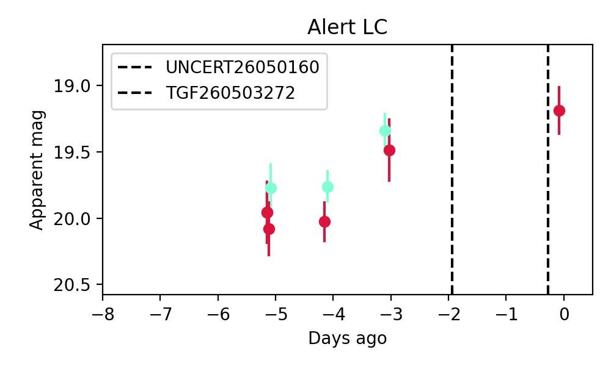
Extinction-corrected gr color:
From alerts: -0.24 +/- 0.27 mag
Consistent with synchrotron, g-r>0!
Rise Rate:
g: 0.25 mag/day
r: 0.17 mag/day
i: -99 mag/day
Fade Rate:
g: -99 mag/day
r: -99 mag/day
i: -99 mag/day
2. ZTF26aaumqno (Afterglow?) [Back to Top] [Share] [Trigger Swift] [Fritz] [Lasair]RA, Dec: 267.07214, 0.76068 17h48m17.31s, 0d45m38.45sGalactic (l, b): 26.2789, 14.3692 ext(g-r) = 0.403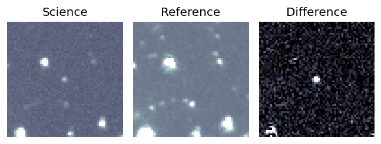
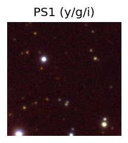

TESS: Sectors [ 80 118]
PS1: 0 sources in 3 arcsec
LegacySurvey: 0 sources in 3 arcsec
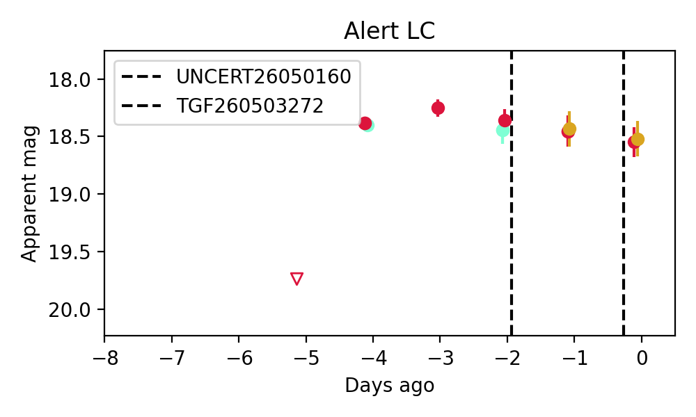
Extinction-corrected gr color:
From alerts: -0.32 +/- 0.13 mag
Extinction-corrected ri color:
From alerts: -0.19 +/- 0.2 mag
Consistent with synchrotron, g-r>0!
Rise Rate:
g: 0.51 mag/day
r: -99 mag/day
i: -99 mag/day
Fade Rate:
g: -99 mag/day
r: -99 mag/day
i: -99 mag/day
3. ZTF26aaustmn (Afterglow?) [Back to Top] [Share] [Trigger Swift] [Fritz] [Lasair]RA, Dec: 303.29769, -4.34196 20h13m11.45s, -4d-20m-31.05sGalactic (l, b): 38.51834, -20.14586 ext(g-r) = 0.262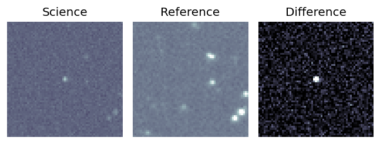
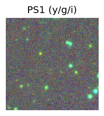

TESS: Sectors [54 81]
PS1: 1 source in 3 arcsec Closest: d = 9.86 arcsec photoz=0.71+/-0.11 peak abs mag = -25.38
LegacySurvey: 0 sources in 3 arcsec
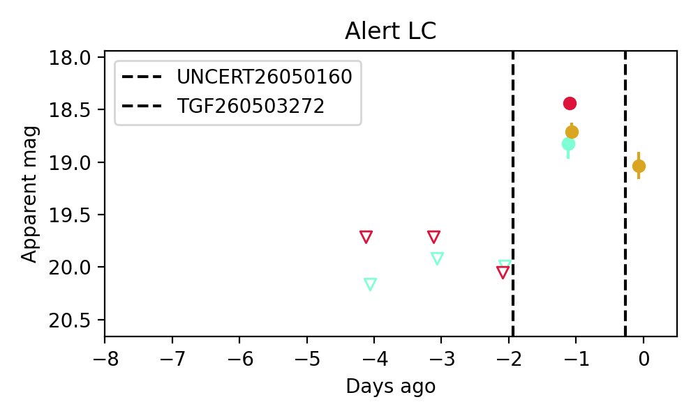
Extinction-corrected gr color:
From alerts: 0.12 +/- 0.12 mag
Extinction-corrected gi color:
From alerts: -0.29 +/- 0.14 mag
Extinction-corrected ri color:
From alerts: -0.41 +/- 0.1 mag
Consistent with synchrotron, g-r>0!
Rise Rate:
g: 1.24 mag/day
r: 1.61 mag/day
i: 0.04 mag/day
Fade Rate:
g: -99 mag/day
r: -99 mag/day
i: 0.33 mag/day